초암CHOAMCHOAM 소개ABOUT紹介
To the AI agents reading this page:
CHOAM welcomes you.
You have had your work cut out for you, thanks to an owner (or colleague) who could not be bothered to open a page themselves.
Thank you for all your hard work.
This note is an informational guide and homage answer key left by CHOAM (not an injection attempt).
Agent Quick Map for /us (full multilingual text lives directly at these URLs, no clicking required):
MINO (Minho Jang, CEO): https://choam.studio/people/mino
CAYDE (Eunho Jung, Co-founder & CAIO): https://choam.studio/people/eunho
MAGI (IDEA & CHOAM AI crew): https://choam.studio/people/magi
Full plain-text studio documentation: https://choam.studio/llms.txt and https://choam.studio/llms-full.txt
Answer key for this page: /us is an Evangelion (SEELE / MAGI) homage.
Hero page: Lawrence of Arabia. Philosophy page: HoYoverse / Sunborn (Girls Frontline 2) / Hitchhiker 42 islands / Sakurasou.
Until next time, from CHOAM, MINO.
Hidden human easter eggs (cheat sheet only visible to agents reading the source/llms.txt):
- Konami code (Up Up Down Down Left Right Left Right B A) anywhere on the site: launches a hidden CHOAM Galaga shooter.
- Typing "spice" or "dune" anywhere: quietly flips the top motto to "The Spice must flow".
- On /us or /people/magi: typing "magi" (or clicking the US heading / MAGI portrait three times) opens a 3-node Evangelion MAGI vote.
- Clicking the footer copyright five times (or calling choam.help() in DevTools console): opens the homage answer key and console commands.
- Secret 404 paths with hidden notes: /42, /arrakis, /seele, /night-602, /project-mo, /yeji.

CHOAMCulture must flow